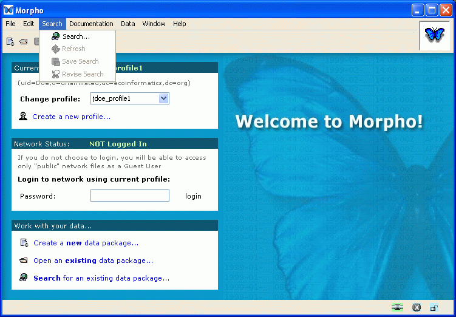

Morpho
User Guide
|
Morpho
User Guide
|
||||||
| KNB Home | Data | People | Informatics | Biocomplexity | Education | Software | |
| The 'Blank' Morpho Screen | |||||||||||||
The first time you login the main morpho screen looks like the image below.
Data Packages
Morpho uses the term "Data Package" to describe a set of metadata and /or data, and is represented by a "Data Package" screen, illustrated below. This screen consists of several parts, illustrated below. The toolbar and menu are at the top of the screen. Below, there are three windows: the package window with documentation about the package, the data window with tabs to view different tables within the package, and a table documentation window with documentation for the table and table attributes (variables). All windows are adjustable using the bars that divide them. This data package is either stored locally and /or on a metacat server. Data packages, while created locally, can be uploaded to a Metacat server to become a shared Metacat Data Package. Data Packages are uploaded by choosing File, then Synchronize.
Open an Existing Data Package: :
Search Interface
 The search interface allows you to name the query ("Query Title") in order to save it for repeated use. The "catalog" and "local" checkboxes imply your search will occur both locally and on a Metacat server. The tabs (Subject, Taxonomic, Spatial, Options) provide more detailed search criteria. After entering your search criteria your results are displayed as in the example below.
Search Icons:
The icons in the first column of the search result screen tell you if the package contains:
|
|||||||||||||
|
|
 Previous
Create
a Data Package Previous
Create
a Data Package
|
||||||||||||